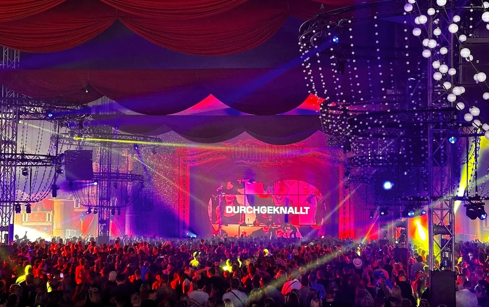
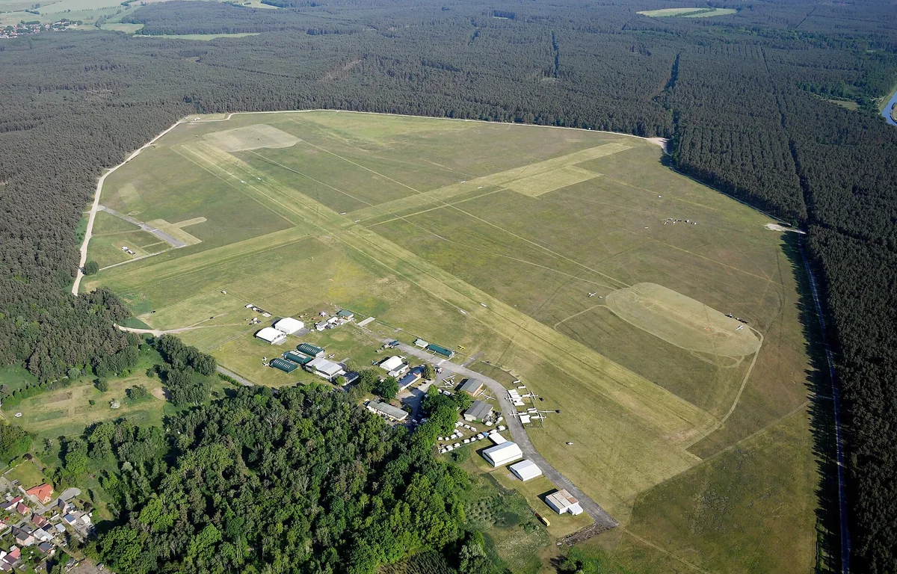
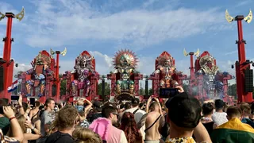

Germany festival guide
Airbeat One Festival: Germany's Airfield Rave Guide
Four major electronic routes share an airfield in northern Germany, with camping functioning as part of the event rather than a quiet place beside it.
Several electronic festivals sharing one airfield.
Airbeat One works more like several electronic festivals sharing one airfield than a single main-stage event. A visitor can spend the night at the harder stage, move into the Arena for techno or head to the Second Stage for psytrance without treating any of them as a support programme. The campsite continues that intensity outside stage hours.
Airbeat One 2027.
Airbeat One 2027 runs from Wednesday 7 to Sunday 11 July at Flugplatz Neustadt-Glewe in Mecklenburg-Vorpommern. The edition celebrates 25 years of Airbeat One and uses Australia as its annual country theme. The organiser describes it as the festival's 24th edition.
| Fact | Current information |
|---|---|
| Dates | 7–11 July 2027 |
| Location | Neustadt-Glewe airfield, Germany |
| Theme | Australia |
| Edition | 24th edition and 25th anniversary |
| Music | EDM, techno, hardstyle and psytrance |
| 2027 lineup | In progress; check the official lineup page |
The official 2027 pages already list ticket and camping categories, but products, access rules and availability can change. The final lineup and precise stage times should be read from the current festival pages rather than inherited from 2026.
Airbeat One tickets are sold in combinations that can separate festival entry, camping, parking and upgrades. Read the current product description rather than assuming one pass covers the entire airfield weekend.
What music Airbeat One plays.
Airbeat One covers several large electronic audiences at once. The Mainstage centres on major EDM bookings and the annual scenic theme. Other stages have carried techno, hardstyle and harder styles, psytrance and related club music. This breadth is why calling it only an EDM festival or only a hardstyle festival gives an incomplete picture.
Neelix’s 2024 set is psytrance and Paul van Dyk’s 2025 Second Stage recording is progressive trance. Both come from the same festival as the commercial Mainstage and the harder styles.
A festival built around stage identities.
The Mainstage changes its architecture with the annual country theme. The harder stage is designed around hardstyle and faster material. The Arena presents techno in a covered environment, while the Second Stage has been associated with psytrance and a large fabric canopy. Names and hosts have changed over time, so the 2027 map remains the authority.

These spaces are substantial enough to plan by stage as well as artist. A visitor focused on techno may spend little time at the Mainstage, while a hardstyle group can structure most of the weekend around one arena. That makes the stage breakdown more useful than a flat list of headline names.
From Airbase One to Airbeat One.
The festival began in 2002 and was originally called Airbase One. It grew at the Neustadt-Glewe airfield, adding a Mainstage in 2010 and developing the country-theme format that now changes the central stage design each year. The 2020 and 2021 editions were cancelled during the pandemic interruption.
The organiser counts 2027 as both the 25th anniversary and the 24th edition. Those numbers can coexist because an anniversary counts elapsed years, while cancelled editions do not become completed festivals.
Camping at Neustadt-Glewe.
Camping is part of the Airbeat One experience, not simply accommodation beside it. The official operation has included several campground products, arrival windows, vehicle rules, wristband exchange and a Festival Plaza linking camping activity with smaller stages and services.

Main camping has a reputation for music continuing through the night. Readers who need sleep should compare the current quiet, special and VIP options rather than assuming every campground behaves the same way. Ear protection is sensible both on the festival floor and in a loud camping area.
Getting there and planning the weekend.
Neustadt-Glewe sits between Hamburg and Berlin, close to the A24. The festival publishes separate guidance for rail travel, shuttle buses, coaches, cars and day visitors. Arrival rules differ by camping product, and a ticket for the festival does not automatically answer parking or campsite access.
Download the current map before setting off and keep the ticket combination available offline. The airfield format involves open ground, long operating hours and changing weather. Water, sun protection, warm layers and hearing protection are more useful than trying to copy another person's hour-by-hour schedule.
Airbeat One Festival FAQ.
Where is Airbeat One Festival?
Airbeat One takes place at the airfield in Neustadt-Glewe, Mecklenburg-Vorpommern, Germany, near the A24 between Hamburg and Berlin.
When is Airbeat One 2027?
Airbeat One 2027 runs from 7 to 11 July. The announced theme is Australia, and the edition marks the festival's 25th anniversary.
What music is played at Airbeat One?
The programme includes mainstream EDM, techno, hardstyle and harder styles, psytrance and related electronic music. Individual stage names and bookings change by edition.
Is Airbeat One a camping festival?
Yes. Camping is a major part of the event, with several ticket and campground categories. Access, arrival and vehicle rules depend on the product purchased.
Is the Airbeat One campsite quiet at night?
Main camping can remain loud. Visitors who need quieter conditions should check the current official descriptions of quiet, special or VIP camping options before booking.
What is the Airbeat One 2027 lineup?
The final 2027 lineup is not complete. Use the official lineup page for confirmed artists and do not rely on an earlier edition's stage allocation.
Sources.
Continue reading
Read next.

Music history~8 min readWhat Is Hardstyle? History, Sound, Artists and Subgenres
Reverse bass, distorted pitched kicks, the Dutch festival circuit and the split between euphoric and raw hardstyle.
Read article → Festivals~7 min read
Festivals~7 min readSziget Festival 2027: Dates, Music, Camping and Travel
Five days on Óbuda Island, with pop, rock and hip-hop beside club stages, theatre, circus and a rail link into Budapest.
Read article → Festivals~7 min read
Festivals~7 min readBoomtown Festival 2027: Dates, Location, History and Music
A five-day camping festival built as a fictional city, with soundsystem culture, electronic music, live bands and street theatre.
Read article → Festivals~7 min read
Festivals~7 min readMonegros Desert Festival 2027: Date, History and Guide
One long electronic event on exposed land near Fraga, with roots in Florida 135 and stages running through the night.
Read article →